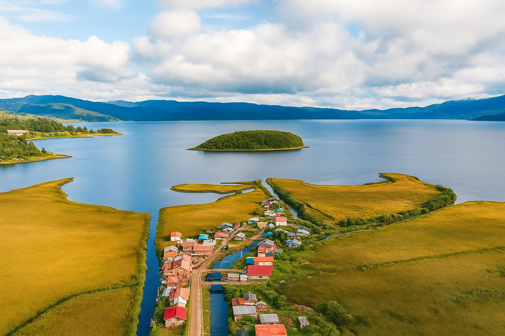
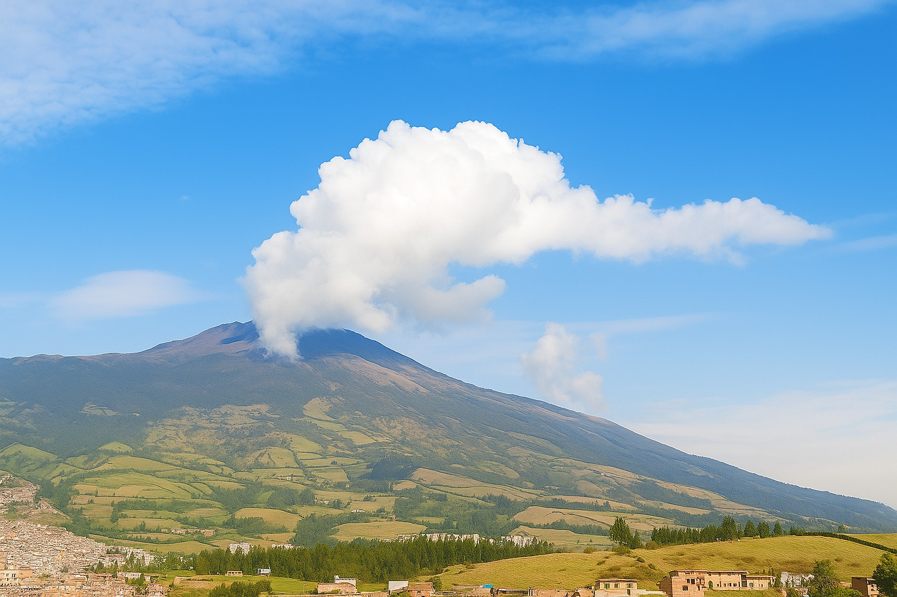
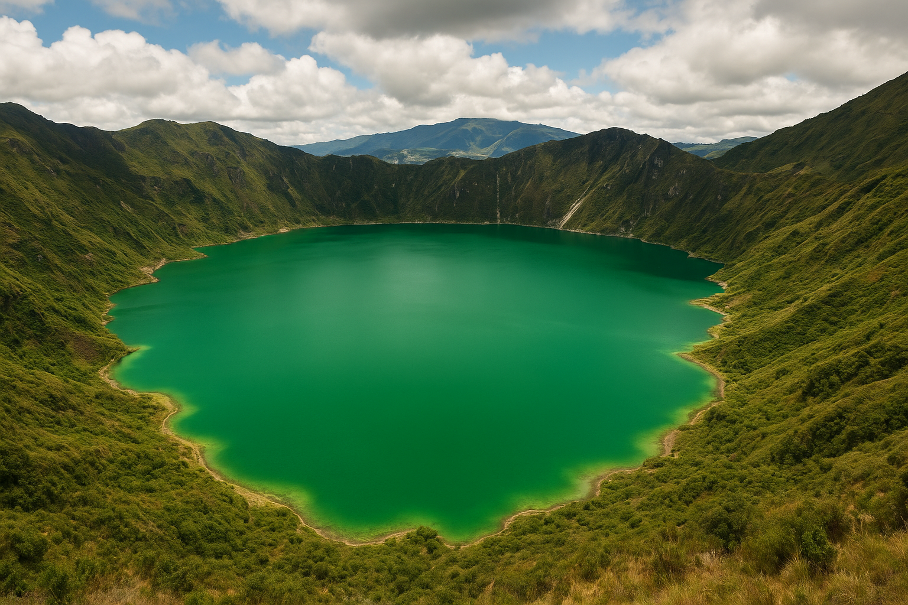
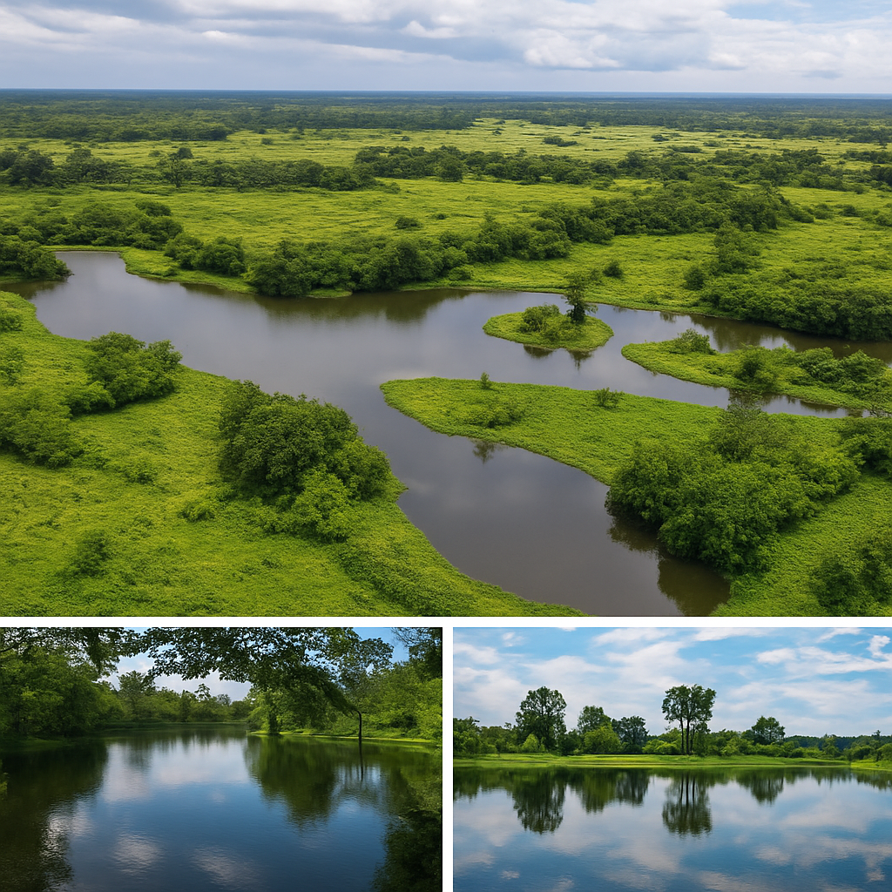

Naturaleza en Estado Puro
Nariño es un paraíso para los amantes de la naturaleza. Con ecosistemas que van desde páramos andinos hasta selvas tropicales, nuestra región alberga una biodiversidad única en el mundo. En CODETURIST nos especializamos en crear experiencias ecoturísticas que respetan el medio ambiente y benefician a las comunidades locales.
Nuestros programas están diseñados para minimizar el impacto ambiental mientras maximizan la conexión con la naturaleza y el aprendizaje sobre los ecosistemas locales.
Destinos Ecológicos

Laguna de la Cocha
El segundo cuerpo de agua natural más grande de Colombia, rodeado de bosques nublados y una rica biodiversidad acuática.

Volcán Galeras
Un imponente volcán activo que ofrece senderos ecológicos, avistamiento de cóndores y vistas panorámicas espectaculares.

Laguna Verde
Ubicada en el volcán Azufral, esta laguna debe su color esmeralda a minerales volcánicos, creando un paisaje surrealista.
Actidades Ecoturísticas
Senderismo Ecológico
Recorridos guiados por senderos naturales con interpretación ambiental y avistamiento de flora y fauna nativa.
Avistamiento de Aves
Nariño alberga más de 800 especies de aves, incluyendo especies endémicas y migratorias.
Turismo Comunitario
Experiencias auténticas con comunidades locales que conservan tradiciones y conocimientos ancestrales.
Fotografía de Naturaleza
Talleres y recorridos especializados para capturar la belleza de los ecosistemas nariñenses.
Nuestros Principios Ecológicos
En CODETURIST operamos bajo estrictos principios de sostenibilidad para garantizar que nuestro turismo beneficie tanto a los visitantes como a los ecosistemas locales:
- Conservación activa: Destinamos el 10% de nuestras ganancias a proyectos de conservación local
- Capacitación comunitaria: Entrenamos a guías locales en prácticas de turismo sostenible
- Huella de carbono: Compensamos las emisiones de nuestros tours mediante reforestación
- Economía circular: Priorizamos proveedores locales y productos biodegradables
- Educación ambiental: Incluimos componentes educativos en todas nuestras experiencias
- Límites de capacidad: Establecemos cupos máximos para proteger ecosistemas frágiles

Testimonios de Ecoturistas

María González
Bogotá, Colombia

Carlos Rodríguez
Medellín, Colombia

Ana Martínez
Cali, Colombia
Planifica tu Experiencia Ecológica
Información para Ecoturistas
Temporadas recomendadas: Diciembre-Febrero y Junio-Agosto
Niveles de dificultad: Desde principiante hasta experto
Grupos reducidos: Máximo 8 personas por guía
Equipo incluido: Bastones, binoculares y guías de campo
Alimentación: Opciones vegetarianas y locales disponibles
Seguridad: Guías certificados en primeros auxilios y rescate